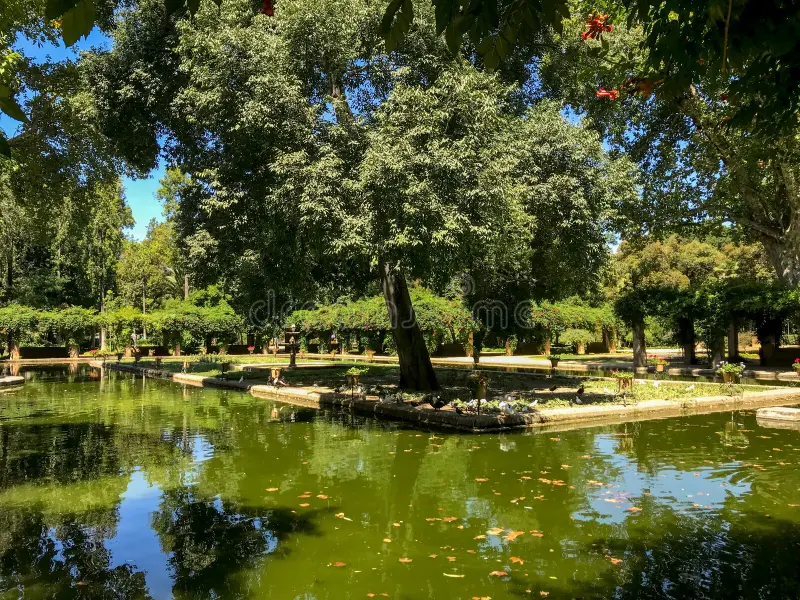
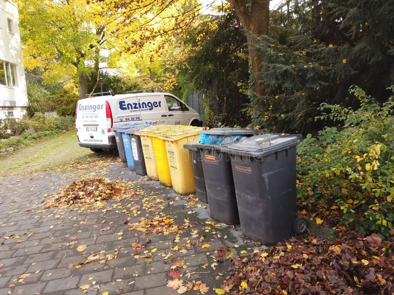

Compromiso ambiental de Múnich
Múnich es la capital de Baviera y una de las ciudades más grandes de Alemania, con más de 1,5 millones de habitantes.
El Ayuntamiento trabaja activamente para proteger el río Isar, reducir la contaminación y promover una ciudad sostenible.
Entre sus medidas destacan la creación de parques urbanos, la promoción del reciclaje y el impulso de la movilidad ecológica.
Noticias

Nuevo parque urbano
El Ayuntamiento ha creado un nuevo parque ecológico en la zona norte de la ciudad.
Este espacio verde ayuda a mejorar la calidad del aire, fomentar la biodiversidad y ofrecer a los ciudadanos
un lugar de recreación y contacto con la naturaleza.

Semana del Reciclaje
Durante el mes de mayo se organizan talleres, charlas y actividades educativas para fomentar el reciclaje
y la reducción de residuos. Se invita a toda la ciudadanía a participar y aprender prácticas sostenibles.
“El futuro de Múnich depende de cómo cuidemos hoy nuestro entorno natural.”
Ayuntamiento de Múnich - Departamento de Medio Ambiente
Cómo puedes ayudar
Cada ciudadano puede aportar su granito de arena para cuidar el medio ambiente. Algunas acciones incluyen:
- Participar en jornadas de limpieza de ríos y parques.
- Usar transporte público, bicicleta o caminar en lugar de coches particulares.
- Reducir, reutilizar y reciclar los residuos domésticos.
- Plantar árboles o cuidar espacios verdes de tu barrio.
- Asistir a talleres y charlas sobre sostenibilidad.
¡Tu participación activa ayuda a que Múnich sea una ciudad más verde, limpia y saludable para todos!
↑ Subir arriba